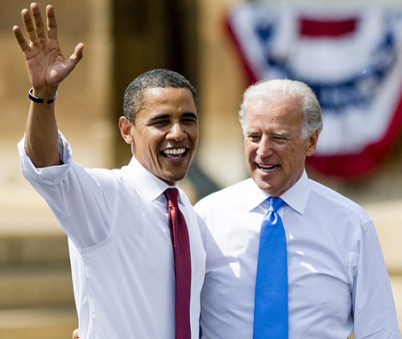
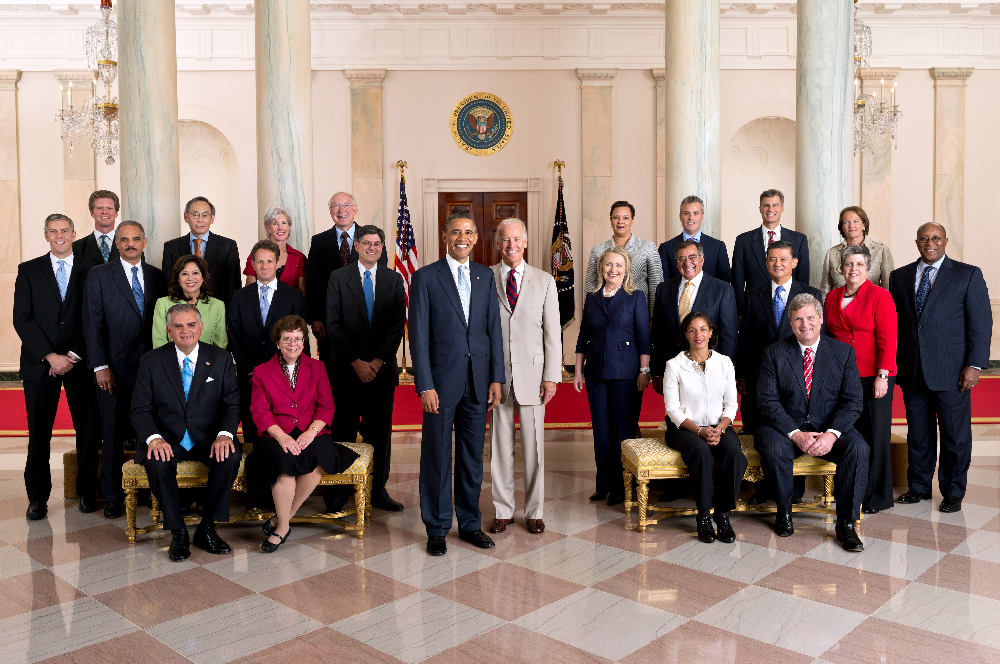

This is where we put some important words about our campaign. Try to keep it short and to the point.
Stay focused. They key is to have every key, the key to open every door. They don't want us to eat. Mogul talk. The other day the grass was brown, now it's green because I ain't give up. Never surrender. How's business? Boomin. It's important to use cocoa butter. It's the key to more success, why not live smooth? Why live rough? Life is what you make it, so let's make it. Always remember in the jungle there's a lot of they in there, after you overcome they, you will make it to paradise.
They key is to have every key, the key to open every door.
I believe we can provide jobs to the jobless, homes to the homeless, and reclaim young people in cities across America from violence and despair. On November 4th, we must stand up and say: "Eight is enough." And I will restore our moral standing, so that America is once again that last, best hope for all who are called to the cause of freedom, who long for lives of peace, and who yearn for a better future. Moreover, freedom in America is indivisible from the freedom to practice one's religion.
Always remember in the jungle there's a lot of they in there, after you overcome they, you will make it to paradise. You smart, you loyal, you a genius. Hammock talk come soon. Hammock talk come soon. Eliptical talk. Lion! Eliptical talk. Lion! Surround yourself with angels. They key is to have every key, the key to open every door. Stay focused. Learning is cool, but knowing is better, and I know the key to success.
Given my background, my politics, and my professed values and ideals, there will no doubt be those for whom my statements of condemnation are not enough. The fact that so many people are surprised to hear that anger in some of Reverend Wright's sermons simply reminds us of the old truism that the most segregated hour in American life occurs on Sunday morning. It should ensure opportunity not just for those with the most money and influence, but for every American who's willing to work. They claim that our insistence on something larger, something firmer and more honest in our public life is just a Trojan Horse for higher taxes and the abandonment of traditional values.